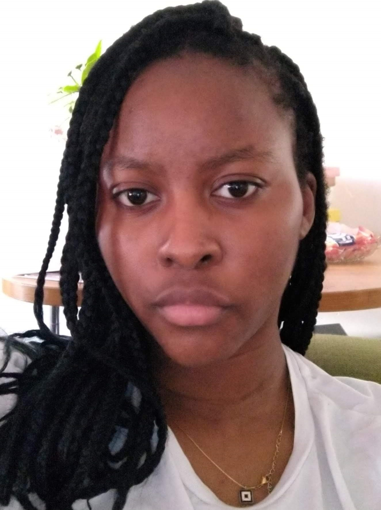

I'm Hannah, I currently live in London. I have a background in Film Production Technology and because of this, film/audiovisual archives are of great interest to me. Last year I was fortunate enough to visit the Museum of Black Civilisation in Senegal which I quite enjoyed. I also enjoy the Internet Archive for the wide range of resources it provides.
